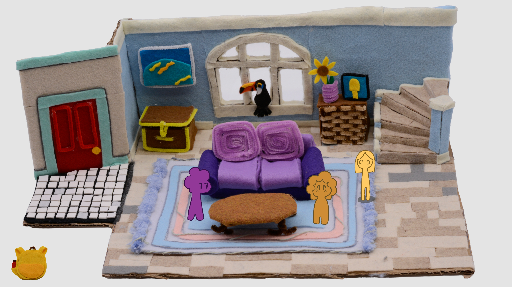
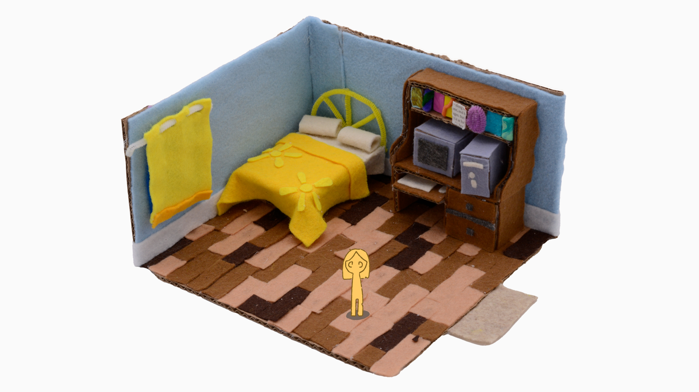

home
about me
some things i made
- abigail
- a machine to devour us all
- pigeon lady
- this journey
- you, the memorious
- the king of wands
- the reversed queen of wands
- ode to american football
- spencer (from the hit 2007 nickelodeon teen sitcom icarly)'s ultimate rat race!
- portrait of a detestable beast
- scratch
- garden at crab nebula
- psychopomp
- and i dreamt we were dancing in a maze
my itch page
my bluesky
my email
ABIGAIL
Abigail is a work in progress game being made by Hapshapen Games. In this narrative-focused game, Abigail must navigate her splintered friend group and explore vibrant handcrafted neighborhoods, each with their unique way of playing the ubiquitous folk game Azulejo. It is a game about the bittersweet feeling of returning to you hometown after a long time away, seeing that everything is simultaneously completely different and the exact same.In this project I am the lead programmer and systems designer, although I also handcraft, draw, and write.
Click here to learn more about Abigail!

